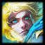
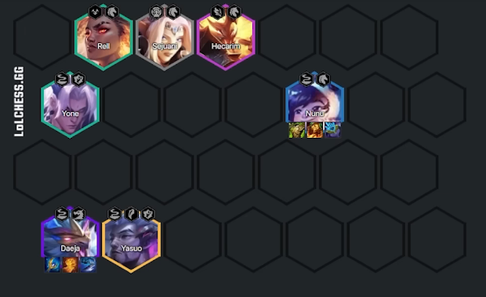

TFT
TFT é um jogo do Genero AUTO CHESS. Consiste em cada player jogar em seu Tabuleiro, montar sua composição, e por turnos jogar contra cada um deles, cada vez que vc joga contra a composição de outra pessoa, vc pode acabar ganhando ou não, o perdedor perde uma certeza porcentagem da vida, o jogo acaba quando restar apenas um com vida.
Riot, a empresa que usou o seu jogo principal, league of legends, como base para criar o TFT, também conta com outros jogos como, Valorant, Legends of runeterra, e muitos outros.Porém eles n param por ai, Riot ja afirmou que estão fazendo 2 novos jogos para sua comunidade, um tendo como genero luta e o outro como genero rpg
Caracteristicas
ORIGEM
ASTRAL(3/5/8)
Após cada combate contra outra pessoa, receba um orbe Astral.O nível de estrela combinado de seus campeões astral aumenta a qualidade da orbe.
campeões astral também recebem Poder de Habilidade adicional


VOO SOMBRIO(2/4/6)
A unidade na casa de voo sombrio é sacrificado no ínico do combate, garantindo uma cópia de um item aleatório que possui a cada campeão voo sombrio, além de vida adicional para cada um deles.
itens não forjáveis e emblemas são corrompidos quando copiados, tornando-se, então, essência de voo sombrio


DRAGÃO(1/2/3/4/5)
Inato: exigem 2 vagas na equipe
Dragões fornecem +3 para a característica maracada e recebem efeitos adicionais com base em quantos dragões estão na sua equipe.
- (1) Vida adicional
- (2) Armadura e resistência Mágica adicionais
- (3) Dano adicional
- (4) +1 de tamanho da equipe
- (5) Todos os efeitos cidados são dobrados


GUILDA(1-8)
Concede um efeito único á sua equipe; membros da guilda recebem dobro de valor. Aumenta cada membro da guilda em jogo!
- Sejuani: vida adicional
- Twitch: velocidade de ataque adicional
- Zippy: Armadura e Resistência Maágica adicionais
- Jayce: Dano de ataque e poder de Habilidade adicionais
- Bardo: Mana adicional por ataque
- Emblema: Vampirismo universal adicional


JADE(3/5/7/9)
Invoque estátuas de jade móveis que aumentam seu poder, e mais estátuas são invocadas com base na quantidade de Cammpeões Jade em Jogo.
a cada combate, os aliados que iniciam o combate em uma casa adjacente a uma estátua cura com base na vida máxima a cada 2s e velocidade de ataque adicional.Quando uma estátua é destruída, ela causa 33% de vida dela como Dano mágico a inimigos próximos.


LAGUNA(3/6/9/12)
Unidade Laguna recbeem Poder de Habilidade e velocidade de ataque adicionais. Uma pedra do Mar aparece no tabuleiro que concede espólios conforme as unidades Laguna conjuram Habilidades ao longo do tempo.


MIRAGEM(2/4/6/8)
Campeões miragem recebem um efeito de característica diferente de uma partida para a outra


MONOLITO(3)
Monolitos criam 3 casas no campo de batalha. As unidades que estiverem na casa do início do combate recebem 20% de redução de dano.
PRODÍGIO(3)
Nomsy recebe uma característica aleatória a cada jogo e invoca um ex-treinador com essa mesma característica para ajudá-la na batalha.O poder de habilidade dos treinadores é sempre igual ao poder de habilidade da nomsy. Quando Nomsy morre, a velocidade de ataque dos treinadores aumenta drasticamente.
ASA DE FÚRIA(2/4/6/8)
Inato: converte Mana em fúria; ataques geram 15 de fúria. Após conjurar uma habilidade, os campeões se enfurecem por 4s. Durante esse tempo, eles recebem 25% de velocidade de ataque, mas não podem receber fúria.
Os campeões Asa de fúria ganham velocidad ede ataque e vampirismo universal adicionais quando se enfurecem.


ANTIESCAMAS(2/4/6)
Antiescamas recebem dano reduzido de inimigos com vida alta, se você não tiver um Dragão na sua equipe, eles também causam uma porcentagem do próprio dano como Dano Mágico adicional

ESCAMALUZ(3/5/7/9)
Concede itens Escamaluz aleatórios exclusivos
- (3) 1 item exclusivo
- (5) 2 itens exclusivos
- (7) 4 itens exclusivos
- (9) 5 itens exclusivos, incluindo Coroa dos Campeões
É possivel remover itens Escamaluz colocando o usuário na reserva


TEMPESTADE(2/4/6/8)
Após 8s, um raio atinge o campo de batalha. inimigos ficam atordoados por 1s e recebem uma porcentagem da vida máxima deles como dano verdadeiro. Depois, campeões tempestade recebem velocidade de ataque.


SUSSURO(2/4/6/7)
O dano de sussurros encolhe os inimigos, reduzindo sua armadura e resistencia magica em 40% por 6s. Quando causam dano a um inimigo encolhido, Sussurros ganham Dano de Ataque e Poder de Habilidade acumulados


CLASSES
ASSASSINO(2/4/6)
Inato: salta para a retaguarda inimiga no início do combate.
Habilidades de assassinos podem causar Acerto Crítico e eles recebem chance de Acerto Crítico adicional e dano de Acerto Crítico Adicional
BARDO(1)
Aliados que sobrevivem ao combate tem 2% de chance de gerar um Doot. Bardo sempre gera um Doot quando dança
Cada Doot QUE Você coletar aumenta as chances de campeões de tier alto aparecerem na sua loja em 1%
BRUTAMONTES(2/4/6/8)
Sua equipe recebe vida máxima adicional. Brutamontes Recebem o dobro deste efeito
CANHONEIRO(3/5/7)
Todo 5° ataque dispara um tiro de canhão que explode, causando Dano Físico ao redor do alvo.
CAVALARIA(2/4/6)
Inato: avança rapidamente em direção ao alvo sempre que ele se mover.
Cavalaria recebe armadura e resistência Magica. No início do combate e após cada avanço, recebem o dobro da quantidade por 4s
DRACOMANTE(2/4/6/8)
Use o item Benção do Dracomante para escolher um Héroi. O héroi recebe grande aumentod e vida e poder de habilidade, que aumenta de acordo com os níveis de estrela de seus Dracomantes.
EVOCADOR(2/3/4)
Evocadores recebem mana sempre que um aliado ou inimigo conjurar habilidade
GUARDIÃO(2/4/6/8)
Uma vez por combate, 60% de vida, guardiões protegem a si mesmos e seu aliado mais próximo com um escudo equivalente a uma porcentagem da vida máxima deles. Os escudos acumulam!
MAGO(3/5/7/9)
Magos podem conjurar sua Habilidade duas vezes e têm o total de poder de habilidade modificado.
MÍSTICO(2/3/4/5)
Sua equipe recebe Resistencia Mágica
METAMORFO(2/4)
Transformar concede Vida máxima adicional
LADRA ARCANA(1)
A Ladra Arcana rouba uma nova habilidade após cada conjuração e no início de cada rodada.
INVOCADORA ESTELAR(1)
A primeira invocadora estelar a conjurar uma habilidade durante o combate contra outra pessoa cura você em(2/3/75), depende do nível de estrela dela. A cura excedente desintegra um campeão inimigo.
DISPARADOR(2/3/4/5)
Inato: recebe 2 casas de alcance de ataque.
Disparadores recebem velocidade de ataque para cada casa entre eles e o alvo.
GUERREIRO(2/4/6)
Ataques de Guerreiros tem 50% de chance de aumentar o dano do próximo ataque.
Composições
XAYAH ASA DE FÚRIA

APHELIOS VOO SOMBRIO
LEE SIN DRACOMANTE

DAEJA
OLAF
DRAGÕES E LENDÁRIAS!

Atualizações
Patch 12.18
CARACTERÍSTICAS
- *A qualidade do orbe Astral agora só contabiliza níveis de estrela de unidades únicas. Acumular cópias de unidades de custo 1 e 3 estrelas não resultará em um aumento de qualidade além do primeiro.
- *A qualidade do orbe Astral agora aumenta em cada nível de estrela, e não em "picos" específicos e cumulativos. Ou seja, a qualidade média do orbe aumentou de uma forma geral. Componentes e itens completos podem aparecer mais cedo do que antes.
- *Canhoneiro – multiplicador de Dano de Ataque do tiro de canhão: 150/300/475% ⇒ 150/250/450%
- *Dracomante – Vida adicional: 250/600/900/1.200 ⇒ 250/600/800/1.000
- *Dracomante – Poder de Habilidade adicional: 18/30/50/75 ⇒ 18/30/50/70
- *Mago – efeito positivo/negativo de Poder de Habilidade: 75/100/125/150% ⇒ 80/110/140/170%
- *Asa de Fúria – Velocidade de Ataque quando enfurecido: 50/100/175/250% ⇒ 50/100/150/250%
- *Item de Escamaluz, Coroa dos Campeões – tempo de carregamento: 6s ⇒ 5s
- *Item de Escamaluz, Investidor Determinado – ouro concedido: 10 ⇒ 15
- *Item de Escamaluz, Gema Desnecessariamente Grande – unidades por ouro: 3 ⇒ 2
- *Item de Escamaluz, Cajado do Ouromante – chance de acionar: 33% ⇒ 40%
- *Item de Escamaluz, Cajado do Ouromante – Poder de Habilidade base e Mana base: 15 ⇒ 20
- *Item de Escamaluz, Carapaça do Manda-Chuva – Vida base: 200 ⇒ 350
CAMPEÕES
- *Wukong – multiplicador de DdA de Golpe Destruidor: 165/180/195% ⇒ 185/200/230%
- *Aphelios – Velocidade de Ataque: 0,75 ⇒ 0,7
- *Kai'Sa – dano de Explosão de Maré: 35/55/75 ⇒ 40/60/85
- *Lux – animação de Centelha Cósmica: levemente mais rápida.
- *Lux – dano de Centelha Cósmica: 350/425/575 ⇒ 325/400/500
- *Agora, a Centelha Cósmica viaja em linha reta depois de atingir o alvo inicial.
- *Zac – cura de Corrente Instável: 200/220/270 ⇒ 220/250/300
- *Nunu – amplificação de dano como Dano Verdadeiro de Consumir: 33% ⇒ 20%
- *O dano amplificado de Consumir não escala mais de forma multiplicativa com a amplificação de dano do Mata-Gigantes.
- *Volibear – dano do 3º ataque de Tempestade Implacável: 110/155/215 ⇒ 125/175/240
- *Zeri – dano de Laser de Aquachoque: 160/240/420 ⇒ 200/300/475
- *Zippy – Correção de bug: Zippy agora atacará o alvo de Ofensiva Acrobática depois da conjuração com maior consistência.
- *Zippy – Dano de Ataque: 80 ⇒ 85
- *Daeja – RE-REFORMULADA: agora, causa Dano de Ataque com as barragens de Rajada de Vento (passivo) e pode equipar itens de DdA, como Lâmina Mortal e Furacão de Runaan.
- *Daeja – Dano de Ataque: 0 ⇒ 20
- *Daeja – dano passivo da Rajada de Vento: 40/60/180 ⇒ 25/40/150
- *Shi Oh Yu – redução de dano da Forma de Jade: 15/20/50% ⇒ 20/25/50%
- *Shi Oh Yu – multiplicador de Dano de Ataque de Forma de Jade: 230/250/1.000% ⇒ 250/275/1.000%
- *Sohm – dano de vórtice da 3ª conjuração de Petalágua: 275/375/1.500 ⇒ 300/420/1.500
- *Swain – cura com base na Vida perdida de Decreto do Mestre dos Dragões: 11% ⇒ 12%
- *Aurelion Sol – dano de Buraco Negro: 325/550/4.000 ⇒ 350/575/4.000
- *Aurelion Sol – aumento de dano do Buraco Negro depois de 18s de combate: 15% ⇒ 20%
ITENS
- *Último Sussurro – Penetração de Armadura: 60% ⇒ 50%
- *Sussurro Eterno (Radiante) – Penetração de Armadura: 60% ⇒ 50%
APRIMORAMENTOS
- *Degolador (Assassino) – aumento de custo de Mana: 50% ⇒ 65%
- *NOVO – Aprimoramento Prata: Conferência Dracomante. A cada 2 rodadas, um Dracomante aleatório aparece na sua reserva. Recebe uma Kai'Sa.
- *Herói em Treinamento (Dracomante) – porcentagem do efeito positivo: 50% ⇒ 66%
- *Luvas da Sorte: Campeões de linha de frente com foco em Dano de Ataque agora receberão uma seleção melhor de itens.
- *Luvas da Sorte: agora concede itens completos em vez de componentes (em Estágios mais iniciais).
- *Luvas da Sorte: algumas opções mais fracas foram removidas para melhorar a força geral do Aprimoramento.
- *Ricochete (Canhoneiro) – redução de dano do ricochete: 33% ⇒ 40%
- *Véu Verdejante – duração da Imunidade a CG: 15s ⇒ 20s
- *Ponto Fraco – Penetração de Armadura: 20% ⇒ 10%